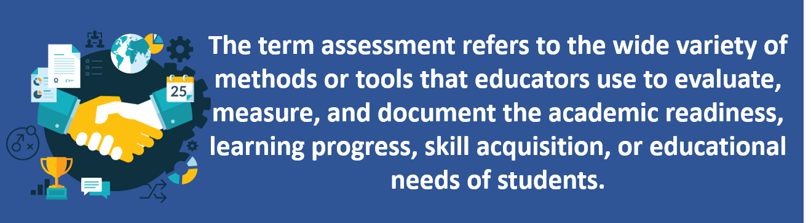
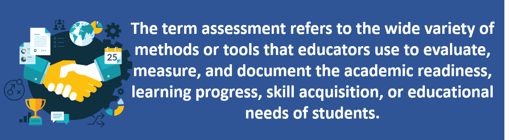

Session Details
- Date: 23rd October 2020
- Topic: Assessment and Evaluation
- Resource Person: Prof. Chalinda K. Beneragama
11. Assessment and Evaluation
Topics covered in this session
- What is an Assesment?
- Need of Assessments
- Types of Assesments in Education System
- Fundamental Components of Assessment
- The Assessment Cycle
- What is Evaluation?
- Types of Evaluation
- 7 Keys to Effective Feedback
What is an Assesment?
In education, the term assessment refers to the wide variety of methods or tools that educators use to evaluate, measure, and document the academic readiness, learning progress, skill acquisition, or educational needs of students.
Need of Assessments
- Motivating and directing learning
- Providing feedback to student on their performance
- Providing feedback on instruction and/or the curriculum
- Ensuring standards of progression are met
Types of Assesments in Education System
- Formative Assessment
It is an essential part of teaching and learning. It does not add to the final marks given for the unit; instead, it put into learning through given advice. Also, it points out what is good about the work and what is not?
- Summative Assessment
It shows the amount of learners’ success in meeting the assessment. Also, it contributes to the final marks given for the unit. These are conducted at the end of units. In Addition, it provides data for selection for the next level.
- Pre-assessments
Pre-assessments are administered before students begin a lesson, unit, course, or academic program. Students are not necessarily expected to know most, or even any, of the material evaluated by pre-assessments
- Screening assessments
Screening assessments are used to determine whether students may need specialized assistance or services, or whether they are ready to begin a course, grade level, or academic program. Screening assessments may take a wide variety of forms in educational settings, and they may be developmental, physical, cognitive, or academic.
- Interim assessments
Interim assessments are used to evaluate where students are in their learning progress and determine whether they are on track to performing well on future assessments, such as standardized tests, end-of-course exams, and other forms of “summative” assessment.
- Work Integrated Assessment
This type of assessment is where the tasks and situations are closely associated with what you experience. It helps to develop student’s skills and capabilities along with educational development.
Fundamental Components of Assessment
- Formulating Statements of Intended Learning Outcomes - statements describing intentions about what students should know, understand, and be able to do with their knowledge when they graduate.
- Developing or Selecting Assessment Measures - designing or selecting data gathering measures to assess whether or not our intended learning outcomes have been achieved
- Creating Experiences Leading to Outcomes - ensuring that students have experiences both in and outside their courses that help them achieve the intended learning outcomes.
- Discussing and Using Assessment Results to Improve Teaching and Learning - using the results to improve individual student performance.
The Assessment Cycle
- Plan - What do I want students to learn?
This stage includes the first fundamental component of assessment: Formulating Statements of Intended Learning Outcomes
- Do - How do I teach effectively?
This stage includes the second and third fundamental components: Developing or Selecting Assessment Measures & Creating Experiences Leading to Outcomes.
- Check - Are my outcomes being met?
his stage involves evaluation of assessment data (part of the fourth component).
- Act - How do I use what I've learned?
This stage involves reinforcing successful practices and making revisions to enhance student learning (part of the fourth component).
What is Evaluation?
Evaluation focuses on grades and might reflect classroom components other than course content and mastery level. An evaluation can be used as a final review to gauge the quality of instruction. It’s product-oriented. This means that the main question is: “What’s been learned?” In short, evaluation is judgmental.
Evaluation Helps Us in the Following Ways;
- The evaluation results tell us about the effectiveness of the process of education and methods of teaching and learning.
- Evaluation results inform us about the level of attainment of our educational goals at various levels of education i.e. Pre-primary, Lower Primary, Upper Primary, Secondary, Senior Secondary and Higher Level of education.
- Assessment and evaluation findings help in building sound educational programmes.
- Process of evaluation serves as an ‘inbuilt monitor’ within the educational programmes to review the progress in learning at different intervals of time.
- It provides valuable feedback on the design and implementation of the educational programmes.
- Evaluation at classroom and school level fulfills the objectives of finding out the attainment of objectives by students in various domains of educational objectives like cognitive, affective and psychomotor.
- Through the evaluation results of students’ performance, effectiveness of teaching methods, teaching-learning approaches used, use of teaching aids, and overall teaching-learning environment is also judged and improved, if needed.
Types of Evaluation
Formative Evaluation
This is the evaluation which is conducted during the on-going process. In the arena of teaching-learning, this evaluation is done throughout the teaching and learning to make an assessment that the set objectives are being achieved or not
Summative Evaluation
Summative evaluation is conducted at the end of a course, semester, or a class or topic. The purpose of this evaluation is to find out the quality of the final product and to find out the extent to which the instructional objectives have been achieved.